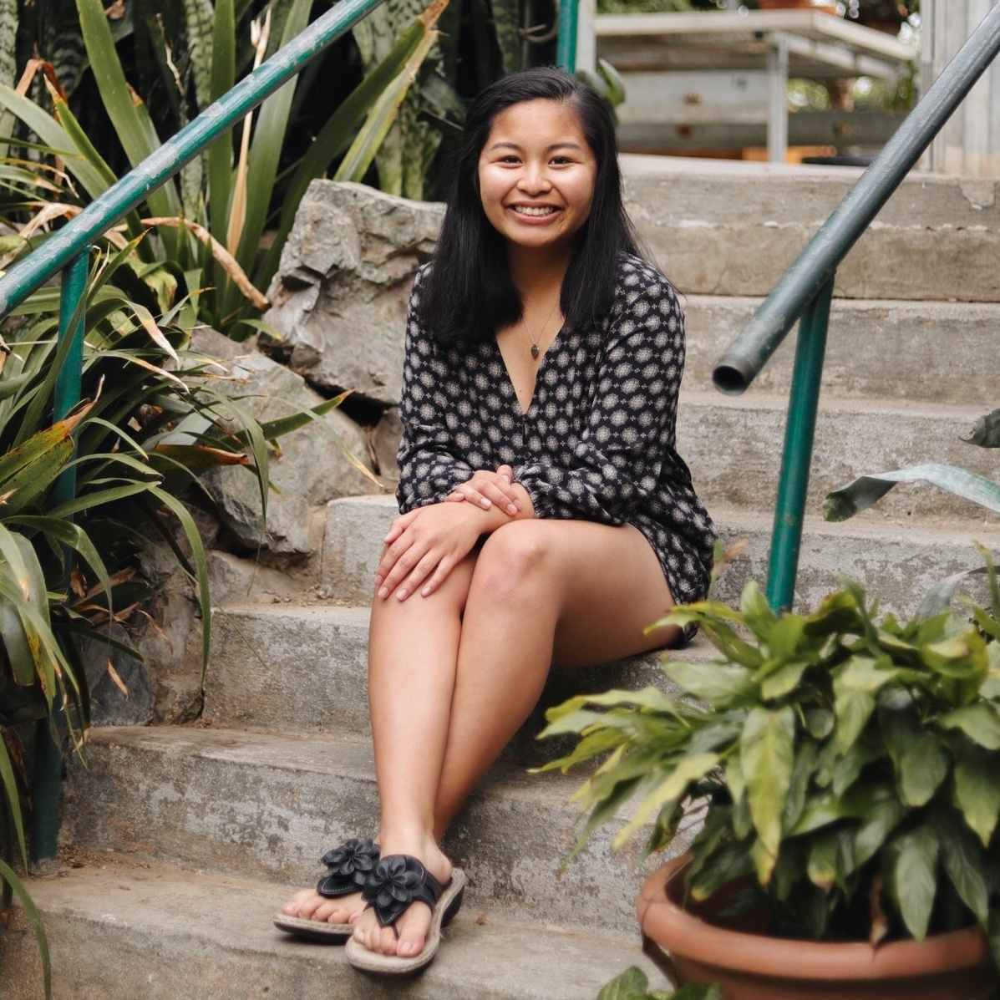
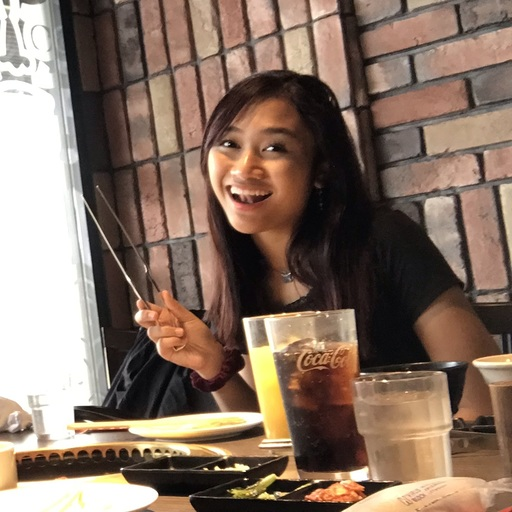
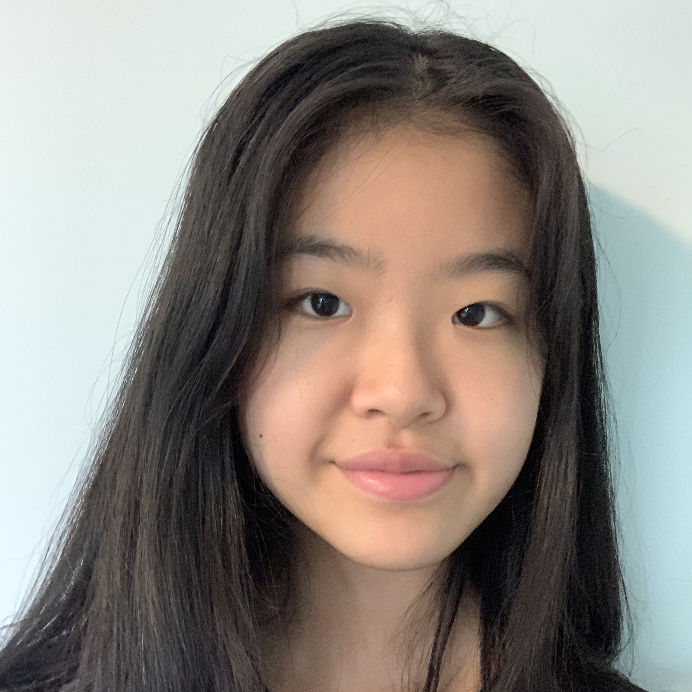

In RedLight, our mission was to create a user-friendly interactive website that will combat human and child trafficking through debugging the taboo and dense information surrounding them. This was done through illustrating the issue, providing information on resources, and anything our audience would need to be informed.
This website was developed in the most different of backgrounds and unlikeliest of circumstances during a Kode with Klossy virtual camp. Through this opportunity, three young women across three different nations have made a fully fuctional website dedicated to fighting against human trafficking in their own way.
Geneva Luteria lives in Anchorage, Alaska and has a past experience in developing personal projects like a Filipino Language Circle, Alaska Mask Makers, and is now adding RedLight to that list. She will be studying at the University of Alaska Anchorage with a major in Biological Sciences and minoring in Computer Science.
Patricia Tejada is a human rights advocate and is passionate about the advancement of technological innovation for human development. She will be studying at La Sapienza University majoring in Applied Computer Science and Artificial Intelligence. She also loves to paint and is currently living in the Philippines.
Emily Wang is an IB student and leader in youth politics in British Columbia, Canada. She organized a Model United Nations conference at her school and participated in Youth Parliament and hopes to continue those interests by majoring in Political Science. Her main hobbies include playing a variety of musical instruments along with coding.
